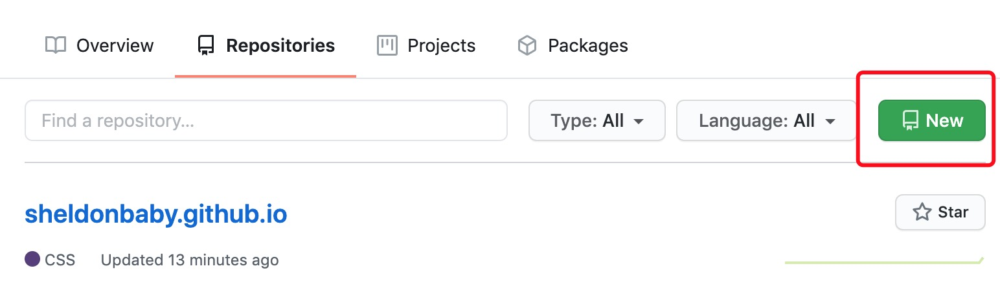

1.1 创建仓库


1.2 配置ssh key
由于使用hexo提交代码到github需要你git账号用户名密码，直接使用的话会很不安全，因此使用ssh key 解决客户端到服务器的连接问题
1 | # 检查本机已存在的密钥 |
如果提示：No such file or directory 说明这是第一次使用git
1 | # 设置git全局用户信息 |
此时ssh密钥生成完毕,打开github,点击settings,新建一个ssh,名字任意,然后输入刚才那一坨密钥。
添加好以后在回到本地bash输入
1 | ssh -T git@github.com |
如果出现 Hi,你的名字! 那就是ok了
2.1 初始化安装
安装hexo
1 | npm install -g hexo |
初始化,初始化完成会看到hexo自动下载了很多文件，node_modules等
1 | cd /documents/hexo |
生成博客页面,此时hexo会在public文件夹生成html js等文件，这些文件后面都要提交到github：
1 | $ hexo g # 生成 |
2.2 修改主题
在官方主题这里找一个看的顺眼的主题下载
1 | # 在hexo目录下 |
下载好的主题都在hexo/themes中
最后修改_config.yml中的theme: landscape为theme: 主题名，然后重新执行hexo g来重新生成。
2.3 把博客上传到github
按照1中把ssh key配置好
然后安装一个插件
1 | sudo npm i -S hexo-deployer-git |
然后修改_config.yml中的deploy:
1 | deploy: |
最后git bash中输入 hexo d 就可以直接把代码提交到git了
2.4 常用hexo命令
1 | hexo new "postName" #新建文章 |
2.5 写博客
新建一个博客,然后hexo默认会生成该博客名的md文件
1 | hexo new 'test-blog' |

最后,这是hexo的官网